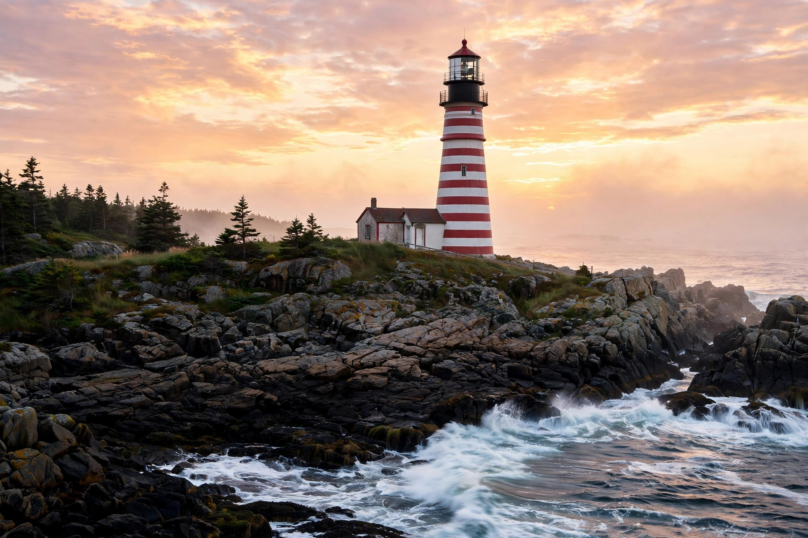

Our story
A stand at the end of the road.
Lubec is the easternmost town in the United States — past it, there's ocean. In 2024, somebody looked at that and thought: this place needs a hot-dog stand. They were right.
-
2024
The doors open on School Street
Downeast Dog House opens at 6 School St in Lubec, Maine — population about 1,300 — serving hot dogs a short drive from West Quoddy Head Light, the easternmost point of the continental U.S.
Source: news coverage, 2025 -
June 2025
The news finds the dogs
B985 and WJBQ both feature the stand, calling it the easternmost hot-dog spot in the U.S. Tourists start adding it to their lighthouse day trips. The line gets a little longer.
Source: B985 / WJBQ, June 2025 -
Oct 2025
A clean bill of health
The Dog House passes its Maine restaurant health inspection. Small stand, serious standards.
Source: state inspection record -
Next
The truck era
The team announced on Facebook that they'll keep the stand open until the building sells — then take the dogs on the road in a food truck. The brand was never about the address. It was about the dogs.
Source: the Dog House's Facebook announcement

Why here
The lighthouse brings them. The dogs keep them.
West Quoddy Head Light sits about four miles down Route 189 — the candy-striped beacon at the edge of the continent. Every summer, thousands of visitors make the pilgrimage for sunrise. A hot-dog stand on the way back into town isn't a business plan. It's a public service.
Come write the next chapter.
Every great roadside stand has regulars. The Dog House is still collecting its first generation. Be one of them.